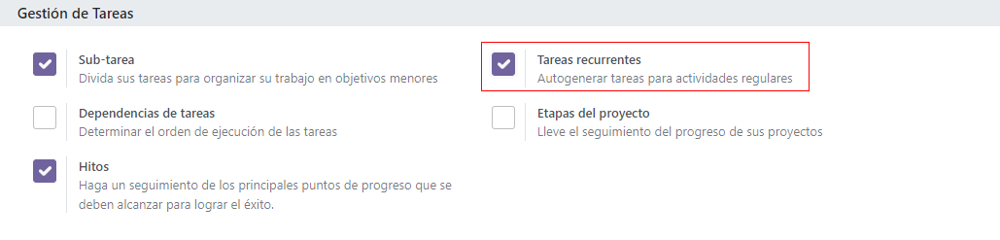
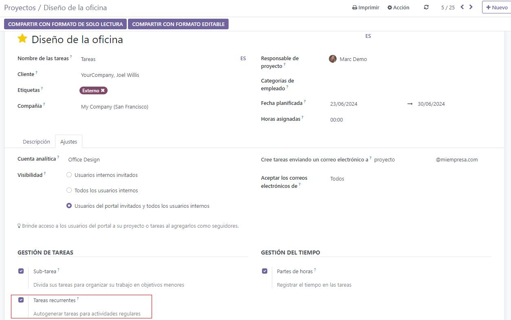

Tareas recurrentes¶
Al trabajar con un proyecto, es muy común que deba realizar una misma tarea varias veces: por ejemplo, reuniones semanales o reportes de estado. La función de tareas recurrentes le permite automatizar la creación de esas tareas.
Ver también
Configuración¶
Para activar las tareas recurrentes, vaya a , luego active la función de Tareas recurrentes y haga clic en Guardar.
Ahora las tareas recurrentes estarán activadas para todos los proyectos existentes. Puede desactivar esta función en un proyecto específico haciendo clic en el botón del menú desplegable ⋮ junto al nombre del proyecto y luego en y desactive la función Tareas recurrentes.
Establezca la recurrencia de una tarea¶
Desde una tarea ya existente, vaya a la pestaña Recurrente, luego haga clic en la casilla Recurrente. Apareceran varias opciones que le permitirán configurar la frecuencia: Días, Semanas, Meses, Años y el número de repeticiones.
En la fecha de recurrencia establecida, se creará una nueva tarea en el tablero de su proyecto con la siguiente configuración.
Etapa: la primera etapa del tablero del proyecto (Nuevo o el equivalente);
Nombre, Descripción, Proyecto, Responsables, Cliente, Etiquetas: copiadas de la tarea original;
Objetivos, Fecha límite, Hojas de horas, Chatter, Actividades: estos campos no se copian;
Subtareas: se copian de la tarea original, la cual se convierte en la tarea padre de todas las tareas recurrentes;
Un botón inteligente mostrará el número total de recurrencias existentes.
Truco
Para ver la tarea en su tablero de proyecto antes de la fecha programada, considere configurar la fecha de la recurrencia a un día antes.
Edite o detenga la recurrencia de una tarea¶
Para editar la recurrencia abra la tarea: un panel azul lo invitará a esocger si quiere que sus cambios se apliquen solo a esta tarea o a una secuencia de tareas.
Para detener la recurrencia, abra la tarea y vaya a la pestaña Recurrencia y desmarque la función Recurrente.